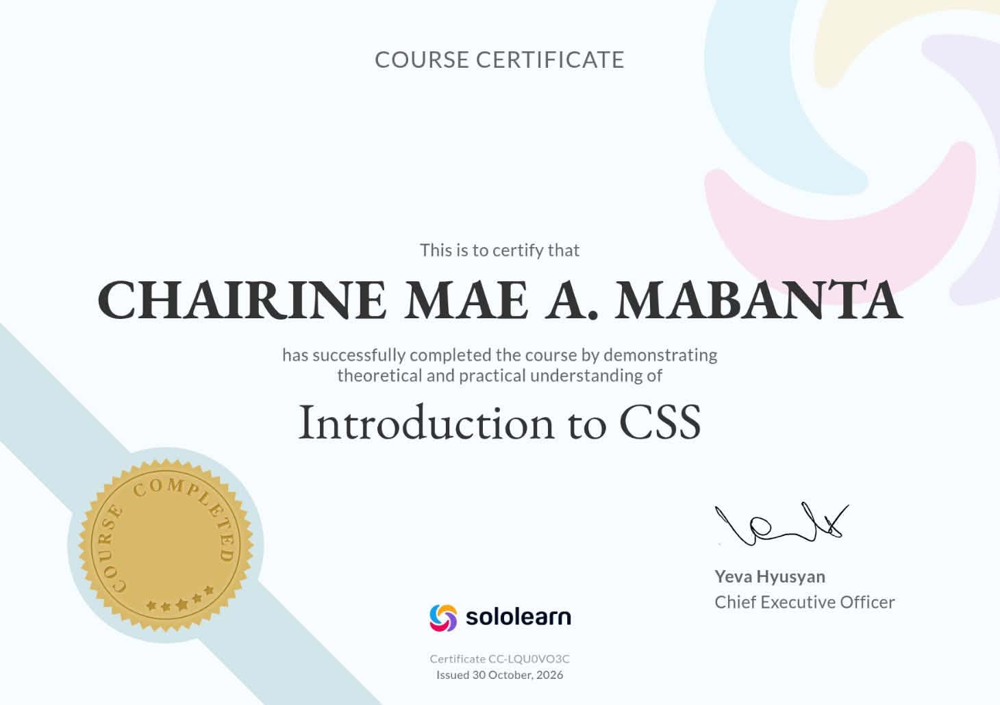

Chairine Mabanta
Chairine Mabanta
Chairine Mabanta
Chairine Mabanta
Lifelong Learner | C Developer | Aspiring Software Engineer
Hunting missing semicolons, navigating C control flow, and architecting reliable code from scratch.
Behind the LogicI’m Chairine Mae Mabanta—a BS Information Technology student on a mission to become a Software Engineer. Currently mastering the fundamentals through C programming, I focus heavily on core logic design, control flow, and code tracing—which mostly means negotiating with compiler errors and hunting down missing semicolons.
I approach software engineering as a structured puzzle: breaking down complex problems step-by-step, investigating why the code isn't doing what I explicitly thought I told it to do, and treating every debugged program as a win.
C Programming, Control Flow & Code Tracing
Methodical problem-solving through debugging and step-by-step logic
Collaborative, detail-oriented, and receptive to technical growth
When I'm not tracing C code or debugging programs, I recharge my creative energy through my favorite hobbies:
I love diving into books and enjoying animated movies and cartoons. Unwinding with good storytelling keeps my creative analytical thinking refreshed!
Currently solving a series of 54 hands-on coding problems (25+ completed), continuously strengthening core logic building, nested conditional statements (if-else), and code tracing.
Volunteered to code and execute real-time problem solutions in front of the class, successfully running bug-free C logic under pressure.
Testing and debugging multiple C programs to ensure correct output execution, proper syntax structure, and edge-case handling.

SoloLearn Verified Certificate

SoloLearn Verified Certificate

SoloLearn Verified Certificate
From C algorithms handling dynamic edge cases to structured HTML/CSS web modules, this showcase highlights precision logic, structured problem-solving, and practical development skills.
This project allows users to perform basic arithmetic operations: Addition, Subtraction, Multiplication, and Division. It takes two numbers as input from the user and computes the result using a switch-case control structure in C.


Role & Outcome: Served as the sole developer, writing and testing the C code independently. Handled setting up the switch-case logic and input/output formatting. Successfully built an error-free console calculator.
A simple C-based console application that checks whether a user-entered letter is a vowel or a consonant. The program evaluates inputs using a switch-case statement, accounting for both lowercase and uppercase vowels (a, e, i, o, u / A, E, I, O, U).


Prints a sequence of numbers from 1 up to a user-defined positive integer n. Prompts the user for a number and uses a basic for loop to iterate and display each number sequentially.
Calculates the sum of natural numbers from 1 up to a user-entered integer n. Uses a while loop to repeatedly add the counter variable i until it exceeds n.

Determines whether a user-entered year is a leap year using an if-else conditional structure. Applies modulo arithmetic: a year is a leap year if it is divisible by 4 but not 100, or if it is divisible by 400.


A functional web page module designed for a computer and device repair service center. It features a cleanly structured data table highlighting tech support offerings (Software and Hardware repairs, estimated time, and base pricing), paired with an interactive client service request form equipped with inputs, dropdowns, checkboxes, and text areas.


Role & Outcome: Developed independently using HTML5 and CSS3. Applied custom styling for table borders, padding, and form controls, resulting in a clean, professional, and user-friendly interface for tech support management.
Got a question about my C logic code, an academic collaboration, or just want to debug a tricky problem together? Feel free to reach out—no segmentation faults guaranteed, and my inbox compiles 24/7!
+63 9635997800
Basak, Lapu Lapu, Cebu, Philippines